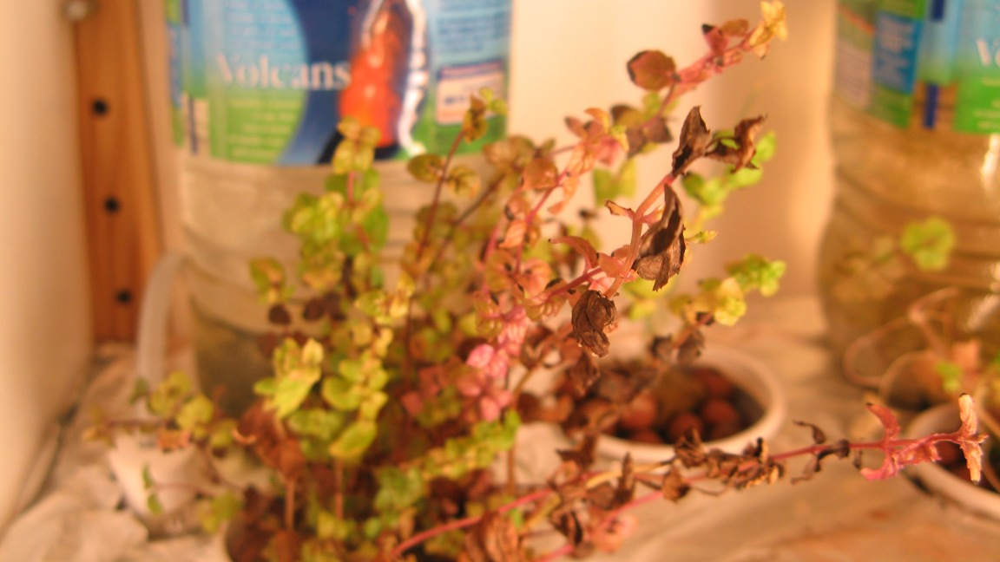
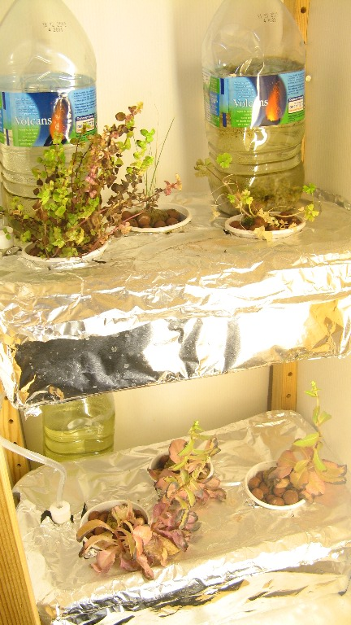
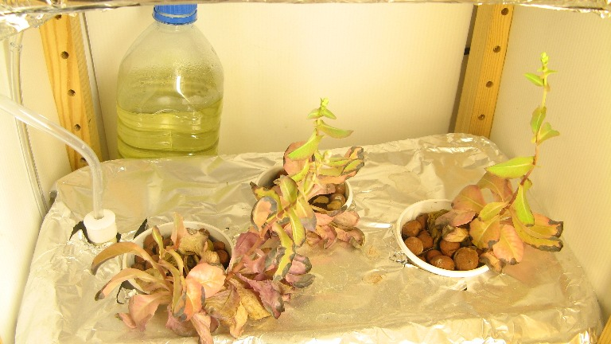
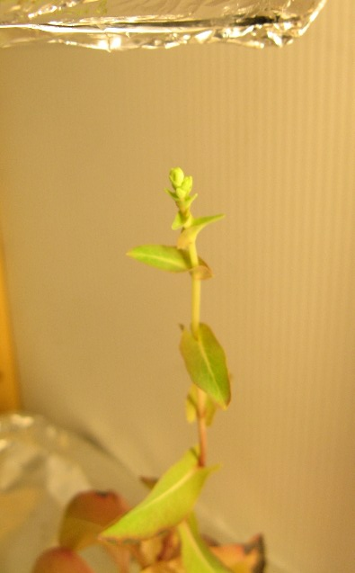

 It has been a while since i updated any of the project pages, due to a series of rather bad turn of events at the start of the summer , but fear not, here is a rundown of the status and upcoming changes to all of them:
V1.0: Quite a bit of a failure:
The bad:
-as the system i used to filter out and renew the water was very clunky (all manual, slow, and unnerving) , and because i was absent for a greater part of the summer, a lot of the plants slowly shriveled away , but not completely: surprisingly as you can see in the pictures below, even though the salads' box had nearly no water left, they actually stayed "alive" and are even close to flowering!
-i did not have the time to work on the ebb & flow system and the Hydroduino , so i only had half of the initially planned plants
](./assets/planting-series00_00-09-09-30-2.jpg)
The good:
-i still find it amazing that with hardly any care , ie :
That the plants managed to survive for this long : when full the grow boxes are filled with approximately only 4.5 L of water taken from the aquariums: i did not refill any of the containers for the last 3.5 months.
-the overall costs still remained very low, and with a little more care and adjustment, i am quite sure the plants could thrive
V2.0:Upcoming improvements , changes and more:
-for the DWC system (pictured above):
-for the ebb & flow /hydroduino system, the aim is still close to 100% automation:
If you have any advice or observations about what has been done or what is beeing planned, don't hesitate to leave a comment or a message! :)
{kind=link}
{kind=link}
{kind=link}